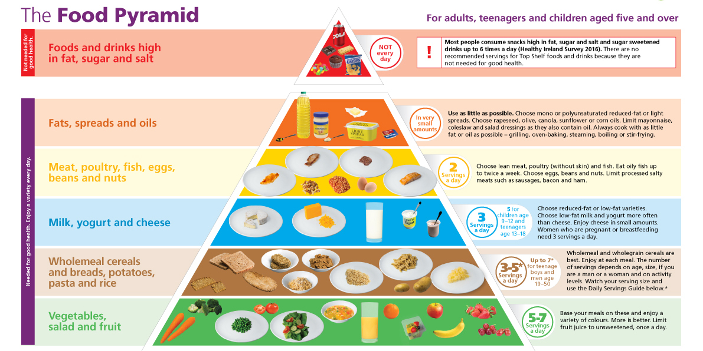

Exercise is intentional physical activity to enhance or maintain fitness and overall health.
It is performed for various reasons, including weight loss or maintenance,
to aid growth and improve strength, develop muscles and the cardiovascular system,
hone athletic skills, improve health, or simply for enjoyment.">
By practicing yoga, you can improve your overall health and well-being.
Yoga has been shown to be helpful for reducing stress, improving your mood, and increasing
flexibility and strength. Additionally, it has been found to help improve your breathing,
circulation, and postural alignment. In short, yoga is a powerful tool that can be used
to improve your physical and mental well-being.">

It shows the different food groups and how much of each we need to have a healthy diet.
Eating the right amount from each food group is called eating a balanced diet.
Eating well is important for all of us. In the short-term, it can help us to feel good,
look our best and stay at a healthy weight. In the long-term, a healthy, balanced diet
can reduce our risk of heart disease, diabetes, osteoporosis and some cancers.">
Mental health includes our emotional, psychological, and social well-being. It affects how we think,
feel, and act. It also helps determine how we handle stress, relate to others, and make healthy choices.
1 Mental health is important at every stage of life, from childhood and adolescence through adulthood.
For example, depression increases the risk for many types of physical health problems,
particularly long-lasting conditions like diabetes, heart disease, and stroke. Similarly, the presence
of chronic conditions can increase the risk for mental illness.">
Regular health check-ups can identify any early signs of health issues. Finding problems early means that
your chances for effective treatment are increased. Many factors, such as your age, health, family history
and lifestyle choices, impact on how often you need check-ups.
If you have high-risk factors, such as a family history of a condition, it may be more likely that you will
develop a particular disease. Regular checks may help your doctor pick up early warning signs.
If you have a high risk of a particular health condition, your doctor may recommend more frequent health
checks at an earlier age.">
The World Health Organization (WHO) defines healthy ageing as the process of developing and maintaining
functional ability to enable wellbeing in older age. Wellbeing incorporates physical, mental and social
health and is the birthright of every human being.Healthy ageing is an individual lived experience that
is influenced by healthy behaviours over the course of a lifetime, including good nutrition, physical activity,
access to high-quality healthcare and social engagement. The intent to age well should be fostered early in life.
A common misconception is that a requirement of healthy ageing is the absence of disease or infirmity.
In reality, many older people experience one or more health conditions that, when well-managed, have little impact
on their wellbeing.">
Getting enough water every day is important for your health. Drinking water can prevent dehydration, a condition that
can cause unclear thinking, result in mood change, cause your body to overheat, and lead to constipation and kidney
stones. Water has no calories, so it can also help with managing body weight and reducing calorie. It helps regulate
body temperature, lubricate and cushion joints, protect sensitive tissues such as the spinal cord, and aid in the
elimination of wastes through urination, perspiration, and bowel movements. Adequate hydration becomes even more
essential in certain situations such as hot climates, increased physical activity, fever, diarrhea, or vomiting,
as the body loses water more rapidly and needs replenishment to maintain optimal function. Thus,
staying hydrated is vital for overall health and well-being, especially during times of increased demand on the body.">
Maintaining an optimal level of social wellness allows you to build healthy relationships with others.
Having a supportive social network allows you to develop assertive skills and become comfortable with who
you are in social situations. Surrounding yourself with a positive social network increases your self-esteem.
Social wellness enables you to create boundaries that encourage communication, trust, and conflict management.
Having good social wellness is critical to building emotional resilience.">